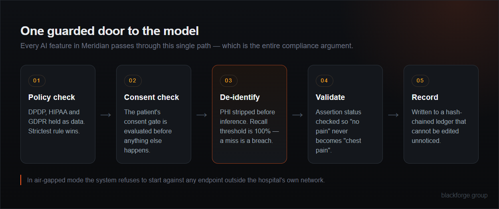

Documentation, record Q&A, medical coding and radiology workflow for a multispecialty hospital — running entirely on your own hardware. Patient data stays inside the building, every AI call is auditable, and nothing reaches a chart until a clinician signs it.
Every hospital knows what clinical AI could do for documentation load and coding backlogs. What stops the project is the question nobody can answer cleanly: where does the patient data go, and can you prove it? Sending records to a public API is the end of the conversation with any serious data protection officer.
Meridian answers it structurally rather than with promises. The system runs on your hardware, and in air-gapped mode it refuses to start if it is pointed at anything outside your own network — a misconfiguration becomes a startup error instead of a silent leak.
Every AI feature calls a single guarded function. Nothing reaches a provider directly, so there is exactly one place PHI handling could fail — and one place to audit.
DPDP 2023, HIPAA and GDPR/EU AI Act live in a policy table. Bound by several at once? You get the strictest effect and the union of conditions, automatically.
Each event hashes its predecessor. Alter one row and the chain breaks from there, with the exact sequence number reported.
Each module has a hard boundary written into the product, not into a disclaimer.
Turns a transcript into a structured SOAP draft with extracted vitals, medications and symptoms, and flags where the source was ambiguous rather than guessing.
Will not: write to the chart without a signature.
Ask a question about a patient and get an answer where every claim is citation-linked back to the source document it came from.
Will not: answer from general medical knowledge when the record is silent.
Suggests codes with the verbatim supporting text beside each one, and points out specificity gaps that would otherwise come back as a query.
Will not: submit a claim without certified-coder sign-off.
Triages the worklist from ordering context, retrieves prior studies for comparison, and scaffolds the report structure for the radiologist to complete.
Will not: read images or produce any finding.
Meridian's test suite covers access control, tenant isolation, consent, de-identification, the audit chain and authentication — 113 end-to-end assertions in all. But passing structural tests is not the same as being clinically safe.
A separate evaluation harness measures clinical meaning. It exists because the structural tests once happily passed a note recording "Reported chest pain" for a patient who had just said "No pain." Everything was structurally correct. The meaning was inverted.
So a concept is never extracted without its assertion status — certainty, who experienced it, when, and whether it was even a question — and the gate blocks any release that regresses on negation.
Multi-factor authentication is verified against all six published RFC 6238 test vectors, so any standard authenticator app interoperates.
Your data protection officer, your compliance lead and your auditor are the real buyers. Meridian is built for their questions.
The data protection officer sees audit, policy and metrics — and no patient data at all. Oversight without exposure, enforced by the role rather than by discipline.
Token scope makes the half-authenticated state explicit. Pre-MFA tokens are rejected by every clinical endpoint, so no code path returns patient data on a password alone.
Drafts, code suggestions and report scaffolds are quarantined visually, structurally and procedurally. Signing requires an explicit attestation of authorship, and signed artefacts are immutable.
The hash-chained ledger detects any edit. Publishing the head hash somewhere your DBA doesn't control turns detection into prevention.
The core imports no vendor. Connectors yield a standard patient and document shape, so adding your hospital information system is one file — not a platform migration.
Run it air-gapped on your own servers now, with the option of multi-tenant hosted deployment later. Starting private doesn't close the door.

No. In air-gapped mode the system refuses to construct an inference client against any endpoint outside your own network. A base URL pointing somewhere public is a startup failure, not a quiet request.
No. Meridian assists documentation, retrieval, coding and workflow. It does not read images and does not produce findings, and a qualified clinician signs everything before it reaches a chart. It is a documentation and workflow tool, not a diagnostic device.
Beyond the 113 end-to-end assertions, a clinical gate measures meaning — 100% negation recall, 100% PHI recall, assertion micro-F1 above 0.90 and grounding above 0.80. A build that regresses does not ship.
No. It boots into a deterministic provider so every screen and workflow can be walked through before you commit any hardware. You can see the whole system before spending on infrastructure.
The policy engine holds DPDP 2023, HIPAA and GDPR/EU AI Act as data. A tenant bound by several gets the strictest effect and the union of conditions, and another regime is a configuration entry.
Yes — your specialties, your templates, your coding workflow, your existing systems. We are a custom software company; adapting it to how your hospital runs is the normal engagement, not an exception.
The fastest way to evaluate Meridian is to let the person who would have to approve it try to break it. Book a walkthrough and bring your hardest compliance question.